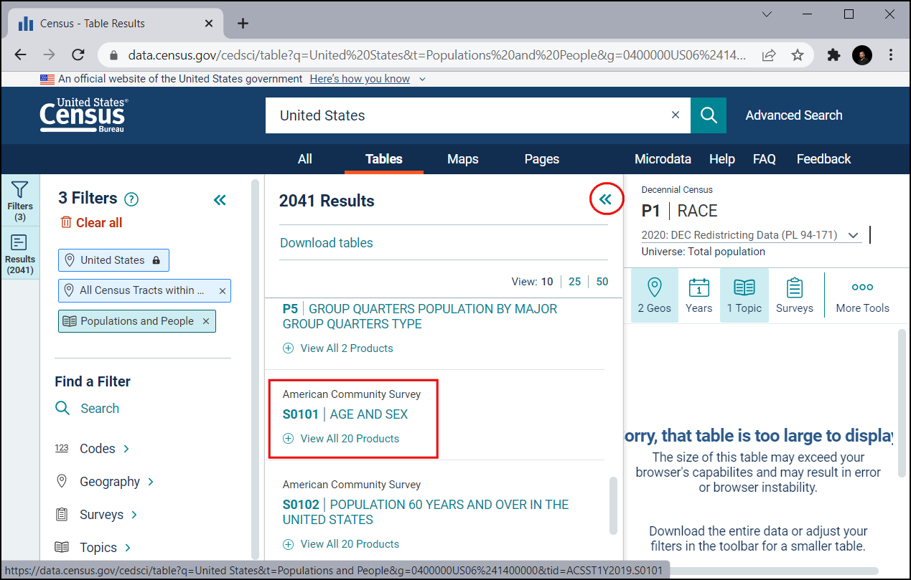
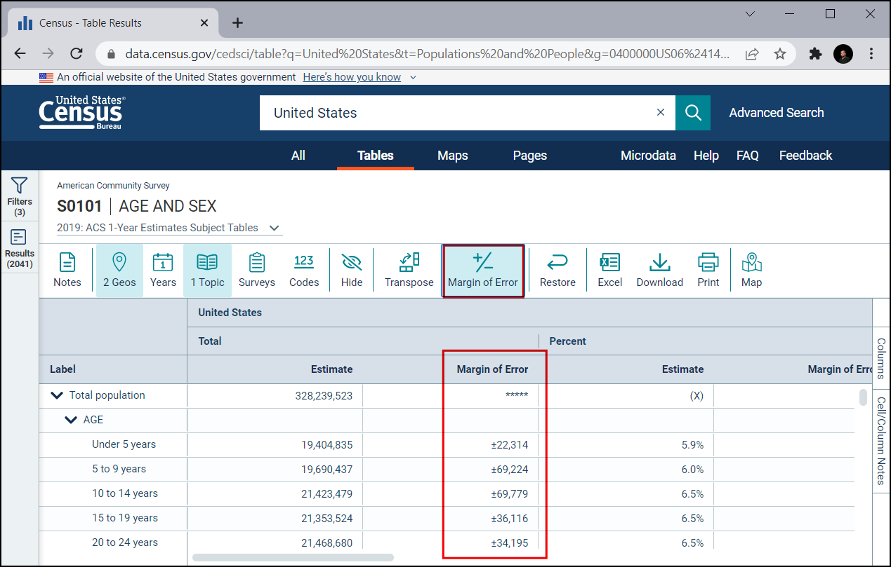
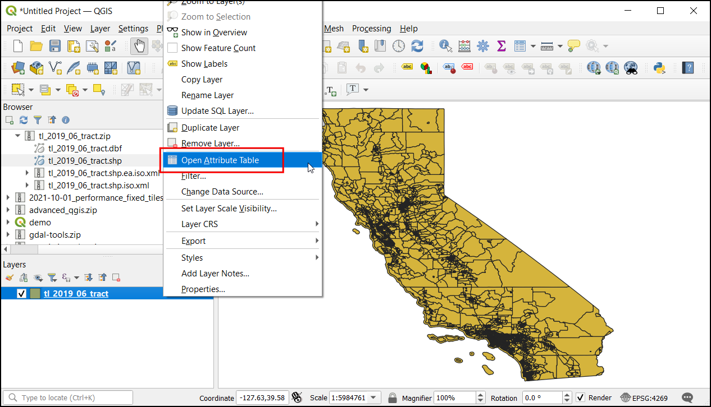

Ujaval Gandhi
Ujaval GandhiSpajanje tabela (QGIS3)¶
Ne dolazi svaki skup podataka koji želite da koristite u prostornom formatu, a često podaci dolaze kao tabelarni podaci poput CSV, TSV ili proračunske tabele. Potrebno je da ih povežete sa postojećim prostornim podacima da biste ih koristili u analizi. Ova operacija je poznata kao Spajanje tabele i vrši se pomoću opcije „Spajanje atributa po vrednosti polja“ iz alatke za obradu algoritma.
Pregled zadatka¶
Koristićemo shapefile popisnih okruženja za Kaliforniju i tabelu podataka o stanovništvu iz Biroa za popis stanovništva SAD da bismo napravili mapu gustine naseljenosti za Kaliforniju.
Druge veštine koje ćete naučiti¶
Učitavanje CSV datoteka koje ne sadrže geometriju u QGIS-u.
Uklonite dodatne zaglavlja u CSV datoteci.
Dodajte dodatnu kolonu sloju.
Stilizujte sloj transparentnim potezom.
Dobijte podatke¶
Želimo da pripremimo mapu gustine naseljenosti za državu Kaliforniju, SAD. Prvo ćemo dobiti tabelu sa brojem stanovnika za svaki popisni okrug u državi.
Preuzmite tabelu popisa¶
Posetite veb-sajt US Census Bureau i kliknite na POGLEDAJ TABELE.

Kliknite na ikonu Filteri u gornjem levom uglu.

Prvo filtrirajmo na Kaliforniju. Kliknite na Geografija.

Kliknite na Tract, što može dati informacije o popisnom okrugu.

Izaberite Kalifornija.

Označite Svi popisni okrugi u Kaliforniji. Ovo nam omogućava da preuzmemo sve informacije kao jednu datoteku umesto da ih preuzimamo zasebno za svaki okrug. Sada kada smo podesili geografiju, kliknite na Teme.

U okviru Izaberite teme, izaberite Stanovništvo i ljudi.

Proverite Stanovništvo i ljudi. Sada smo izabrali sve potrebne filtere. Zatvorite prozor filtera.

U oknu Preuzmi tabele pomerite se nadole da biste pronašli S0101 | STAROST I POL

Ovo će otvoriti detaljan prikaz podataka. Nas zanima samo populacija, stoga opozovite izbor opcije Margina greške kako bismo mogli da dobijemo samo potrebne informacije i uštedimo prostor za skladištenje datoteka.

Kliknite na dugme Preuzmi.

Odabrani podaci su dostupni za više godina i korišćenjem različitih tehnika procene. Preporučuje se ACS 5-godišnje tabele procene predmeta jer višegodišnje procene povećavaju pouzdanost podataka. Takođe nema praznina u podacima i sadrži informacije za sve delove zemlje. Izaberite godinu „2019“. i kliknite na Preuzmi. Ovim ćete preuzeti zip datoteku. Kada se završi, raspakujte je na lokalni disk.

Preuzmite granice popisnih područja¶
Da bismo kreirali mapu iz tabele popisa, potrebne su nam i granice koje predstavljaju svaki popisni okrug u državi Kaliforniji.
Posetite TIGER Line Shapefiles i kliknite na Veb interfejs.

U okviru Izaberite godinu izaberite
2019, u Izaberite tip slojaPopisni delovii kliknite na Pošalji.

Izaberite „Kalifornija“ u Izaberite državu i kliknite na Preuzmi. Ovo će preuzeti zip datoteku koja sadrži vektorske datoteke.

Radi lakšeg snalaženja, možete direktno preuzeti kopiju oba skupa podataka sa donjih linkova:
Izvor podataka [TIGER] [USCONSUS]
Procedura¶
Pronađite datoteku
tl_2019_06_tract.zipu QGIS pregledaču i proširite je. Izaberite datotekutl_2019_06_tract.shpi prevucite je na platno.

Dijalog Izaberite transformaciju će vas pitati da konvertujete iz EPSG:4269 u EPSG:4326. Ovaj dijalog prikazuje nekoliko transformacija za konvertovanje između koordinata između ovih projekcija. Ostavite selekciju na podrazumevanoj postavci i kliknite na U redu.

Videćete sloj
tl_2019_06_tractučitan u panelu Slojevi. Ovaj sloj sadrži granice popisnih područja u Kaliforniji. Kliknite desnim tasterom miša na slojtl_2019_06_tracti izaberite Otvori tabelu atributa.

Ispitajte atribute sloja. Da bismo spojili tabelu sa ovim slojem, potreban nam je jedinstveni i zajednički atribut svake karakteristike. U ovom slučaju, postoji 8057 pojedinačnih zapisa trakta sa poljem „GEOID“. Ova kolona može povezati ovaj sloj sa bilo kojim drugim slojem ili tabelom koja sadrži isti ID.

Da biste učitali tabelarne podatke, kliknite na Otvori menadžer izvora podataka.
U dijalogu Data Source Manager izaberite Delimited Text. Zatim u desnom uglu kliknite na
...pored File name i pregledajte raspakovanu fasciklu sa CSV datotekom o stanovništvu Kalifornije.

Sada pod Uzorak podataka, možemo da pregledamo podatke čak i pre nego što ih učitamo kao sloj. Prikaz pokazuje da tabela podataka sadrži 2 reda zaglavlja.

Da biste eliminisali dodatni red zaglavlja, pod Opcije zapisa i polja podesite Broj redova zaglavlja za odbacivanje na
1. Sada će tabela sadržati odgovarajuća zaglavlja kolona. Pošto ovaj sloj sadrži samo tabelarne podatke, izaberiteBez geometrije (samo tabela sa atributima)pod Definicija geometrije. Kliknite na Dodaj da biste ga dodali kao sloj, a zatim kliknite na Zatvori da biste zatvorili ovaj dijaloški prozor.

CSV će sada biti uvezen kao tabela u QGIS i pojaviće se kao
ACST5Y2019.S0101u panelu Slojevi. Sada kliknite desnim tasterom miša na sloj i izaberite Otvori tabelu atributa.
Kolona „ID“ sadrži jedinstveni ID za svaki zapis, koji se može koristiti za spajanje ove tabele sa slojem „tl_2019_06_tract“. Ako uporedite vrednosti „ID“-a sa kolonom „GEOID“ iz „tl_2019_06_tract“, primetićete da ima prefiks 1400000US. Da bi se ove dve tabele uspešno spojile, vrednosti moraju potpuno da se podudaraju. Uklonimo ovaj prefiks i dodajmo novu kolonu sa poslednjih 11 znakova koji sadrže vrednost koja se potpuno podudara.

Da biste kreirali novu kolonu sa poslednjih 11 cifara, otvorite Kutiju sa alatkama za obradu tako što ćete otići na i potražiti i pronaći algoritam .

U dijalogu Kalkulator polja, izaberite
ACST5Y2019.S0101kao Ulazni sloj, unesitegeoidu Naziv polja i izaberitestringu Tip polja rezultata. Sada potražitesubstru izrazima. Možemo koristiti ovu funkciju da izdvojimo potreban deo iz polja id.

Unesite donji izraz. Koristimo funkciju substr i izdvajamo vrednost sa pozicije -11 (negativna vrednost se broji od kraja). Konačni rezultat se može videti u odeljku Preview. Kliknite na Run.
substr("id", -11)
Sada će novi sloj „Izračunato“ biti učitan na platnu, hajde da pregledamo tabelu atributa. Biće prisutna nova kolona „geoid“ sa vrednošću koja se može upariti sa popisnim traktom.

Da biste kreirali spajanje tabela, otvorite Kutiju sa alatkama za obradu tako što ćete otići na i potražiti i pronaći algoritam .

U dijalogu Spoji atribute po vrednosti polja, izaberite
tl_2019_06_tractkao Ulazni sloj iGEOIDkao Polje tabele. IzaberiteIzračunatokao Ulazni sloj 2 igeoidkao Polje tabele 2. U okviru Polja sloja 2 za kopiranje, kliknite na....

Označite „Naziv geografskog područja“, „Procena ukupne populacije“ i „geoid“. Kliknite na OK.

Označite Odbaci zapise koji nisu mogli biti spojeni. Ovo će eliminisati sve dodatne zapise u tabeli populacije. Kliknite na dugme … ispod spojeni sloj da biste izabrali lokaciju izlazne datoteke i izaberite
Sačuvaj u datoteku....

Nazovite izlazni geopaket kao
california_total_population.gpkg. Kliknite na Pokreni.
Kada se obrada završi, proverite da li je algoritam bio uspešan ako je svih 8057 karakteristik(a) spojeno. Kliknite na Zatvori.

Videćete novi sloj „california_total_population“ učitan u panelu :guilabel:„Slojevi“. U ovom trenutku, polja iz CSV datoteke su spojena sa slojem popisnih traktova. Sada kada imamo podatke o stanovništvu u sloju popisnih traktova, možemo ga stilizovati da bismo kreirali vizuelizaciju raspodele gustine naseljenosti. Kliknite na dugme :guilabel:„Otvori panel za stilizovanje slojeva“.

U panelu Stilizovanje sloja, izaberite
Postepenoiz padajućeg menija. Pošto želimo da kreiramo mapu gustine naseljenosti, želimo da dodelimo različite boje svakoj karakteristici popisnog okruga na osnovu gustine naseljenosti. Imamo broj stanovnika u polju Procena!!Ukupno!!Ukupno stanovništvo i polje površine u LAND. Kliknite na dugme Izraz da biste izračunali procenat ukupnog broja stanovnika u svakom popisnom okrugu.
Белешка
Prilikom kreiranja tematske (horoplet) mape kao što je ova, važno je normalizovati vrednosti koje mapirate. Mapiranje ukupnog broja po poligonu nije ispravno. Važno je normalizovati vrednosti deljenjem sa površinom. Ako prikazujete ukupne vrednosti kao što je kriminal, možete ih normalizovati deljenjem sa ukupnim brojem stanovnika, čime se mapira stopa kriminala, a ne kriminal. Saznajte više

Unesite sledeći izraz da biste izračunali gustinu naseljenosti. Površina objekta je data u kvadratnim kilometrima. Zatim je pretvaramo u kvadratne metre množenjem sa „1000000“ i izračunavanjem gustine naseljenosti pomoću formule Stanovništvo/Površina. Pregledajte rezultat i kliknite na OK. Unesite sledeći izraz da biste izračunali gustinu naseljenosti. Površina objekta je data u kvadratnim kilometrima. Zatim je pretvaramo u kvadratne metre množenjem sa „1000000“ i izračunavanjem gustine naseljenosti pomoću formule Stanovništvo/Površina. Pregledajte rezultat i kliknite na OK.
1000000 * ("Estimate!!Total!!Total population"/"ALAND")
U Panelu za stilizovanje slojeva, kliknite na classify i unesite klase kao
10.

Kliknite na skalu boja da biste izabrali skalu boja
RdYlGn.
Veća gustina je više zabrinjavajuća, pa ćemo dodeliti zelenu boju oblastima niže gustine, a crvenu oblastima visoke gustine. Kliknite na skalu boja i izaberite Invertiraj skalu boja.

Veća gustina je više zabrinjavajuća, pa ćemo dodeliti zelenu boju oblastima niže gustine, a crvenu oblastima visoke gustine. Kliknite na skalu boju i izaberite Invertiraj skalu boju.

Kliknite na Boja poteza i kliknite na Transparentni potez`.

Kante se mogu podesiti, kliknite na Values, ovo će otvoriti dijalog za unos gornje i donje granične vrednosti.
Kada budete zadovoljni, zatvorite panel za stilizovanje slojeva. Sada imamo lepu vizuelizaciju informacija o gustini naseljenosti u Kaliforniji.

If you want to give feedback or share your experience with this tutorial, please comment below. (requires GitHub account)